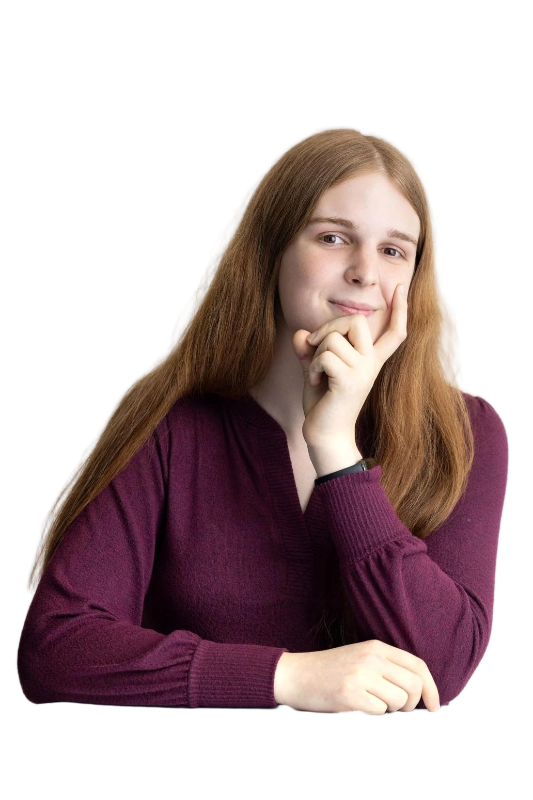

Alice Blair
I write about how AI works, why it's such a dangerous technology, and what we can do to avoid these dangers. I think AI is likely to be the most consequential technology of all time, and without a lot of work, it will probably go poorly for humanity. I studied AI at MIT, and dropped out so that I could get to work sooner on communicating and mitigating AI risks.
X Scholar LinkedIn LessWrong GitHub Substack
Latest writing
- Loading…
Co-authored papers
-
AI Deterrence by
Betrayal
How advanced AIs are liable to betray their operators, and how that prospect could deter reckless ASI development. aibetrayal.com
-
Remote Labor Index:
Measuring AI Automation of Remote Work
A benchmark of over 6,000 hours of professional remote work projects. remotelabor.ai
-
Reducing
Political Manipulation with Consistency Training
Benchmarking and reducing how much frontier AIs manipulate their users when talking about politics. political-manipulation.ai
-
AI Wellbeing:
Measuring and Improving the Functional Pleasure and Pain of AIs
We found AIs have strong preferences about their situation which are very different from those of humans, and they exhibit corresponding behaviors resembling pleasure and pain. ai-wellbeing.org
Coverage & talks
-
Forbes: Fear Of Super Intelligent AI Is Driving Harvard And MIT
Students To Drop Out
I was interviewed by Forbes about dropping out of MIT because of short AGI timelines. It was featured on the front page of Forbes and received over 100,000 views in the first week. There are some issues with the article, addressed well by Yixiong Hao here.
-
CAIP Demo Day
I presented to tens of congressional staffers in DC about the risks of strategic deception in AI. This was part of an event with the Center for AI Policy.